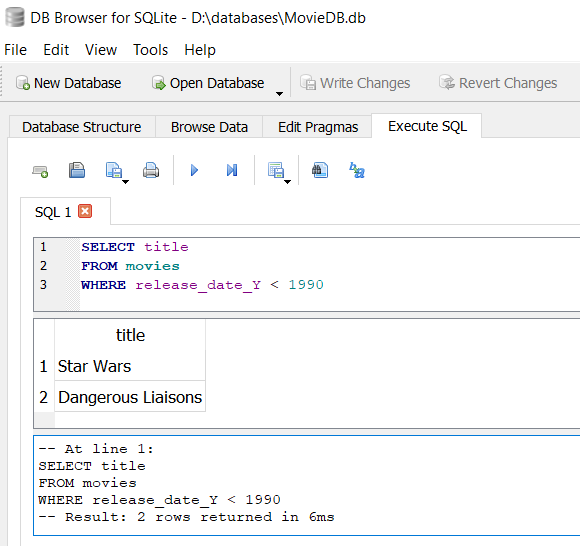

3.2. Querying a Relational Database
For retrieving information from a database, one has to express and execute a DB query expressed in a query language. For instance, we may want to get answers to the following questions:
- Which movies have been released before 1990?
- What is the name of the director of the movie "Dangerous Liaisons"?
- What are the names of the actors of "Pulp Fiction"?
- In which movies is the director also an actor?
Questions like these can be expressed in the standard RDB language SQL in the form of query statements, which can be executed by an RDBMS for retrieving Information in the from of matching answers from an RDB.
Exercise: Issue Queries with SQLite DB Browser
1. Which movies have been released before 1990?
The SQL code for the first query is as follows:
1 2 3 | SELECT title FROM movies WHERE release_date_Y < 1990 |
As we can see in this simple example, the standard form of an SQL query consists of three clauses:
- The
SELECTclause lists the columns for which the query is supposed to retrieve data. - The
FROMclause specifies the tables involved in the query. - The
WHEREclause specifies a condition for selecting those rows that qualify for being included in the answer set.
When entering it in the Execute SQL tab of the SQLite DB Browser and clicking on ▶ (or pressing F5), the query is executed and the answers (or results) are listed below in a table with just one column, containing movie titles, as shown in Figure 3-3 below.
 2. What is the name of the director of the movie Dangerous Liaisons?
The second query from our list above is a bit more involved since answering it requires to join a movie record and a person record for looking up the name of the director. Consequently, the two tables movies and people are involved, and their rows are joined by requiring that the id number of a people row is the same as the director number of a movies row. Thus, the condition: people.id = movies.director is used for joining the corresponding rows:
1 2 3 4 | SELECT name FROM people, movies WHERE people.id = movies.director AND movies.title = "Dangerous Liaisons" |
Although the result of processing this query seems to be a single answer, "Stephen Frears", it is in fact an answer table consisting of one row, only.
Since expressing SQL queries for the third and fourth question from our list above requires more familiarity with SQL, we will discuss it in Part III.